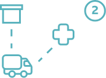
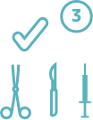
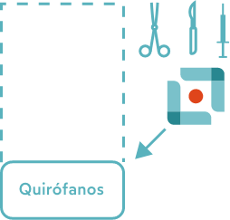
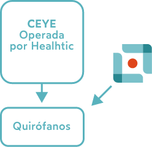
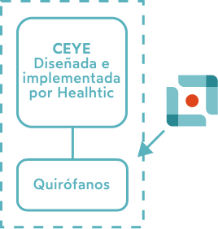

Según la OMS, las infecciones asociadas a los servicios de salud, son el evento adverso más frecuente a nivel mundial. Los servicios de esterilización en las unidades hospitalarias en México presentan problemas como:
La creciente demanda quirúrgica empuja el proceso de esterilización hacia prácticas incorrectas para evitar retrasos, doctores insatisfechos, etc.
La creciente complejidad de las cirugías y de los instrumentos que requieren de un proceso específico de esterilización para cada uno de ellos.
La falta de administración del activo de instrumental genera inconsistencias con la programación quirúrgica y unos ciclos de renovación más cortos.
Fuerte inversión en espacio hospitalario de alta productividad (bloque quirúrgico) y en equipamiento específico de esterilización.
Alta rotación del personal, escasa capacitación y ausencia de certificación específica de los procesos de esterilización.
Desactualización frente a los últimos estándares y tecnologías.
Difícil integración entre certificación, capacitación, servicio técnico y consumibles, debido a la complejidad de la estructura hospitalaria.
¿Cómo se resuelve el problema hoy?
Más que esterilizadores y CEYEs, los hospitales requieren de instrumental funcional, estéril y a tiempo. Para solucionar este problema HEALTHIC ha desarrollado un servicio de esterilización tercerizada y certificada.
Los servicios que ofrecemos se realizan en una central diseñada, equipada y operada bajo la normatividad y los estándares nacionales e internacionales aplicables, el estado del arte tecnológico global y lo más importante el mejor talento de México.
Es un servicio certificado en tres fases:
Lavado, termodesinfección, empaquetado, inspección y esterilización del instrumental propiedad del cliente.
*con opción mantenimiento y reparación del instrumental y endoscopios).

Logística de recolección y entrega punto a punto.

Renta de instrumental estéril bajo demanda (Instruments as a Service - IaaS).
Ofrecemos 3 modelos de gestión de la esterilización
A) Servicio externo Deslocalización
0% de las instituciones de Salud

La institución de Salud realiza la inversion en un equipamiento que instala dentro de su edificio, y opera de manera propia.Este es un modelo para fabricantes de dispositivos médicos y hospitales.
B) Operación tercerizada Servicio in-house
1% de las instituciones de Salud

La institución de Salud realiza la inversion en un equipamiento que instala dentro de su edificio, y opera de manera propia.Este es un modelo para fabricantes de dispositivos médicos y hospitales.
C) Tradicional/Proyecto
99% de las instituciones de Salud

La institución de Salud realiza la inversion en un equipamiento que instala dentro de su edificio, y opera de manera propia.Este es un modelo para fabricantes de dispositivos médicos y hospitales.
Beneficios
Instrumentos a solicitud (administración + servicio + sustitución).
Enfoque OPEX - pagas según necesidad (variabilización de costos).
Transparencia del proceso mediante la trazabilidad.
Tecnología siempre operativa y mantenida por un ingeniero en plantilla propia de Healthic.
Personal capacitado y certificado dedicado.
Proceso certificado (ISO 13485) en cumplimiento con los últimos estándares.